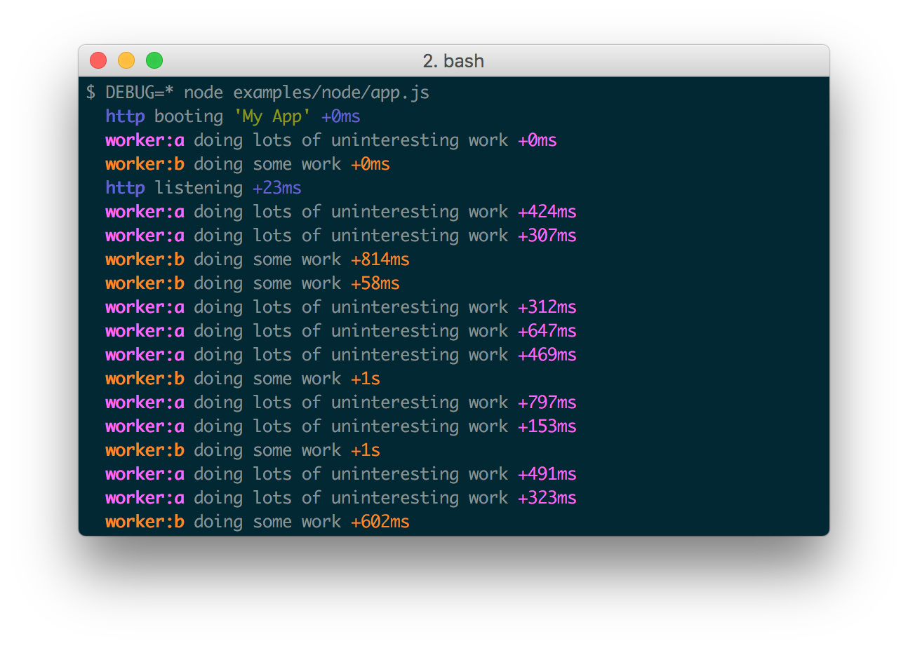

Proper logging is of massive utility for web apps, both during development and after deployment.
What can sometimes
be difficult is organizing both the code and output of logging, i.e. knowing where each log
message is coming from.
I recently found debug, a
Node.js utility for
organized and optimized debugging.
Creating an instance of debug is simple and you can create multiple loggers per
file:
// Create multiple instances of debug
// In theory these would serve two different purposes
var debuggerA = require('debug')('worker:a'),
debuggerB = require('debug')('worker:b');
// Sample usages of the debugger
function work() {
debuggerA('doing lots of uninteresting work');
setTimeout(work, Math.random() * 1000);
}
work();
function workb() {
debuggerB('doing some work');
setTimeout(workb, Math.random() * 2000);
}
workb();

The namespace given to a debug instance as you must use an environment variable to
signal which loggers
should go to STDOUT when the script is run:
// Show all debugger messages prefixed "worker:_____"
DEBUG=worker:* node app.js
The environment variable strategy for signaling which instances should output is brilliant as you may want only certain types of messages logged in production vs. development. Use namespaces wisely!
I was also able to use chalk to color messages as desired:
var chalk = require('chalk');
debuggerA(chalk.red.bold('OMG an awful error!'));
debug is one of those utilities that has a very simple purpose and accomplishes the
task well. Don't
skimp when it comes to logging informative messages -- they'll help you during development and
could be critical
when auditing the app after a security incident!